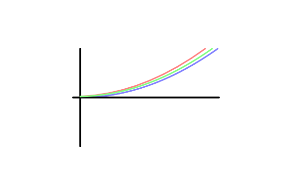
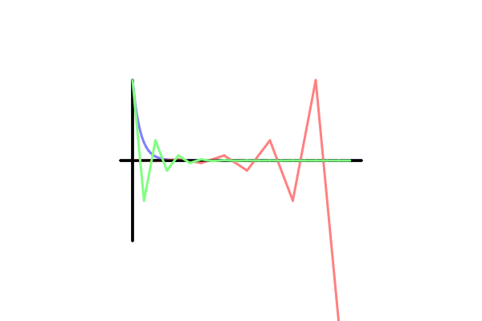

The Forward Euler Method
The Euler methods are some of the simplest methods to solve ordinary differential equations numerically. They introduce a new set of methods called the Runge Kutta methods, which will be discussed in the near future!
As a physicist, I tend to understand things through methods that I have learned before. In this case, it makes sense for me to see Euler methods as extensions of the Taylor Series Expansion. These expansions basically approximate functions based on their derivatives, like so:
Like before, is some function along real or complex space, is the point that we are expanding from, and denotes the derivative of .
So, what does this mean? Well, as mentioned, we can think of this similarly to the kinematic equation: where is position, is velocity, and is acceleration. This equation allows us to find the position of an object based on it's previous position (), the derivative of it's position with respect to time () and one derivative on top of that (). As stated in the Tayor Series Expansion, the acceleration term must also have in front of it.
Now, how does this relate to the Euler methods? Well, with these methods, we assume that we are looking for a position in some space, usually denoted as , but we can use any variable. The methods assume that we have some function to evaluate the derivative of . In other words, we know that . For the kinematic equation, we know what this is!
So, we can iteratively solve for position by first solving for velocity. By following the kinematic equation (or Taylor Series Expansion), we find that
For any timestep . This means that if we are solving the kinematic equation, we simply have the following equations:
Now, solving this set of equations in this way is known as the forward Euler Method. In fact, there is another method known as the backward Euler Method, which we will get to soon enough. For now, it is important to note that the error of these methods depend on the timestep chosen.

For example, here we see dramatically different results for different timesteps for solving the ODE , whose solution is . The blue line is the analytical solution, the green is with a timestep of 0.5 and the red is with a timestep of 1. To be clear: the larger the timestep, the worse the error becomes; however, there is at least one more problem with using the forward Euler method on real problems: instabilities.
As we mentioned, the forward Euler method approximates the solution to an Ordinary Differential Equation (ODE) by using only the first derivative. This is (rather expectedly) a poor approximation. In fact, the approximation is so poor that the error associated with running this algorithm can add up and result in incredibly incorrect results. As you might imagine, the only solution to this is decreasing the timestep and hoping for the best or using a similar method with different stability regions, like the backward Euler method.
Let's assume we are solving a simple ODE: . The solution here is and we can find this solution somewhat easily with the forward Euler method shown below. That said, by choosing a larger timestep, we see the Euler method's solution oscillate above and below 0, which should never happen. If we were to take the Euler method's solution as valid, we would incorrectly assume that will become negative!

Like above, the blue line is the analytical solution, the green is with a timestep of 0.5 and the red is with a timestep of 1. Here, it's interesting that we see 2 different instability patterns. The green is initially unstable, but converges onto the correct solution, but the red is wrong from the get-go and only gets more wrong as time goes on.
In truth, the stability region of the forward Euler method for the case where can be found with the following inequality: Which means that the forward Euler method is actually unstable for most values! If we want to stick to using the forward Euler method exclusively, the only solution is to decrease the timestep until it is within this stability region, and that's not necessarily easy for all cases. So now it might be obvious that another, more stable method should be used instead; however, many other stable methods are implicit, which means that in order to find the solution, we need to solve a system of equations via the Thomas Algorithm or Gaussian Elimination. Which is an entire layer of complexity that most people don't want to mess with!
Now, here is where we might want to relate the method to another algorithm that is sometimes used for a similar use-case: Verlet Integration. Verlet integration has a distinct advantage over the forward Euler method in both error and stability with more coarse-grained timesteps; however, Euler methods are powerful in that they may be used for cases other than simple kinematics. That said, in practice, due to the instability of the forward Euler method and the error with larger timesteps, this method is rarely used in practice. That said, variations of this method are certainly used (for example Crank-Nicolson and Runge-Kutta, so the time spent reading this chapter is not a total waste!
Example Code
Like in the case of Verlet Integration, the easiest way to test to see if this method works is to test it against a simple test-case. Here, the most obvious test-case would be dropping a ball from 5 meters, which is my favorite example, but proved itself to be slightly less enlightening than I would have thought. So, this time, let's remove ourselves from any physics and instead solve the following ODE: . Note that in this case, the velocity is directly given by the ODE and the acceleration is not part of the model.
function solve_euler(timestep::Float64, n::Int64)
euler_result = Vector{Float64}(undef, n)
# Setting the initial condition
euler_result[1] = 1;
for i = 2:length(euler_result)
euler_result[i] = euler_result[i-1] - 3.0*euler_result[i-1]*timestep
end
return euler_result
end
function check_result(euler_result::Vector{Float64}, threshold::Float64,
timestep::Float64)
is_approx = true
for i = 1:length(euler_result)
time = (i - 1)*timestep
solution = exp(-3*time);
if (abs(euler_result[i] - solution) > threshold)
println(euler_result[i], solution)
is_approx = false
end
end
return is_approx
end
function main()
timestep = 0.01
n = 100
threshold = 0.01
euler_result = solve_euler(timestep,n)
is_approx = check_result(euler_result, threshold, timestep)
println(is_approx)
end
main()
#include <stdio.h>
#include <math.h>
void solve_euler(double timestep, double *result, size_t n) {
if (n != 0) {
result[0] = 1;
for (size_t i = 1; i < n; ++i) {
result[i] = result[i-1] - 3.0 * result[i-1] * timestep;
}
}
}
int check_result(double *result, size_t n, double threshold, double timestep) {
int is_approx = 1;
for (size_t i = 0; i < n; ++i) {
double solution = exp(-3.0 * i * timestep);
if (fabs(result[i] - solution) > threshold) {
printf("%f %f\n", result[i], solution);
is_approx = 0;
}
}
return is_approx;
}
int main() {
double result[100];
double threshold = 0.01;
double timestep = 0.01;
solve_euler(timestep, result, 100);
printf("%d\n", check_result(result, 100, threshold, timestep));
return 0;
}
#include <algorithm>
#include <cmath>
#include <cstddef>
#include <iostream>
#include <iterator>
#include <utility>
#include <vector>
using std::begin;
using std::end;
using std::size_t;
std::vector<double> solve_euler(double timestep, size_t size) {
std::vector<double> result;
double current = 1.0;
for (size_t i = 0; i < size; ++i) {
result.push_back(current);
current -= 3.0 * current * timestep;
}
return result;
}
// check_result takes an iterator over doubles,
// and returns whether any value is outside the passed threshold.
template <typename Iter>
bool check_result(Iter first, Iter last, double threshold, double timestep) {
auto it = first;
for (size_t idx = 0; it != last; ++idx, ++it) {
double solution = std::exp(-3.0 * idx * timestep);
if (std::abs(*it - solution) > threshold) {
std::cout << "We found a value outside the threshold; the " << idx
<< "-th value was " << *it << ", but the expected solution was "
<< solution << '\n';
std::cout << "(the threshold was " << threshold
<< " and the difference was " << std::abs(*it - solution)
<< ")\n";
return true;
}
}
return false;
}
int main() {
double threshold = 0.01;
double timestep = 0.01;
auto result = solve_euler(timestep, 100);
auto outside_threshold =
check_result(begin(result), end(result), threshold, timestep);
auto msg = outside_threshold ? "yes :(" : "no :D";
std::cout << "Were any of the values outside of the threshold (" << threshold
<< ")? " << msg << '\n';
}
fn main() {
let mut result = [0.0; 100];
let threshold = 0.01;
let timestep = 0.01;
solve_euler(timestep, &mut result);
println!("{}", check_result(&result, threshold, timestep));
}
fn solve_euler(timestep: f64, result: &mut [f64]) {
let n = result.len();
if n != 0 {
result[0] = 1.0;
for i in 1..n {
result[i] = result[i - 1] - 3.0 * result[i - 1] * timestep;
}
}
}
fn check_result(result: &[f64], threshold: f64, timestep: f64) -> bool {
let mut is_approx: bool = true;
for (i, val) in result.iter().enumerate() {
let solution = (-3.0 * i as f64 * timestep).exp();
if (val - solution).abs() > threshold {
println!("{} {}", val, solution);
is_approx = false;
}
}
return is_approx;
}
type alias Position =
Float
type alias Velocity =
Float
type alias Particle =
{ pos : List Position, vel : List Velocity }
k : Float
k =
-2
diffEq : Position -> Velocity -> Time -> Time -> ( Position, Velocity )
diffEq x v t dt =
( x + (k * x) * dt, k * (x + (k * x) * dt) )
evolve : Particle -> Time -> Time -> Particle
evolve p t dt =
let
( x, v ) =
diffEq (getX p) (getV p) t dt
in
{ p | pos = x :: p.pos, vel = v :: p.vel }
Full code for the visualization follows:
module Euler exposing (..)
import Html exposing (Html, div, button, text, h3)
import Html.Attributes exposing (style)
import Html.Events exposing (onClick, on)
import Time exposing (Time, second)
import Maybe exposing (withDefault)
import Window exposing (Size, size)
import Svg exposing (svg, circle, line, polyline)
import Svg.Attributes exposing (width, height, stroke, x1, x2, y1, y2, cx, cy, r, points, fill)
import Task exposing (perform)
import Slider exposing (..)
import Mouse
import Json.Decode as Decode
import Hex
main =
Html.program
{ init = init
, view = view
, update = update
, subscriptions = subscriptions
}
-- MODEL
type alias Model =
{ part : Particle
, dt : Time
, dt0 : Time
, t : Time
, status : Status
, wWidth : Int
, wHeight : Int
, history : List ( Time, Time, Particle )
, drag : Maybe Drag
}
type alias Position =
Float
type alias Velocity =
Float
type alias Particle =
{ pos : List Position, vel : List Velocity }
type Status
= Idle
| Running
type alias Drag =
{ start : Position
, current : Position
}
getX : Particle -> Position
getX p =
withDefault 0 <| List.head <| .pos p
getV : Particle -> Velocity
getV p =
withDefault 0 <| List.head <| .vel p
getX0 : Model -> Position
getX0 m =
let
scale x =
3 - 6 * x / (toFloat m.wHeight)
in
case m.drag of
Nothing ->
getX m.part
Just { start, current } ->
getX m.part + scale current - scale start
-- INIT
init : ( Model, Cmd Msg )
init =
( Model (Particle [ x0 ] [ 0 ]) 0.5 0.5 0 Idle 0 0 [] Nothing, perform GetSize size )
x0 : Position
x0 =
2.5
-- UPDATE
type Msg
= Start
| Stop
| Tick Time
| GetSize Size
| SliderUpdate Float
| DragStart Mouse.Position
| DragAt Mouse.Position
| DragEnd Mouse.Position
update : Msg -> Model -> ( Model, Cmd Msg )
update msg model =
case msg of
Start ->
( { model
| status = Running
, t = 0
, dt = model.dt0
, drag = Nothing
}
, Cmd.none
)
Stop ->
( { model
| status = Idle
, part = Particle [ x0 ] [ 0 ]
, t = 0
}
, Cmd.none
)
Tick _ ->
case model.status of
Idle ->
( model, Cmd.none )
Running ->
if model.t > 5 + model.dt then
( { model
| status = Idle
, part = Particle [ x0 ] [ 0 ]
, history = ( model.dt, model.t, model.part ) :: model.history
, t = 0
}
, Cmd.none
)
else
( { model
| part = evolve model.part model.t model.dt
, t = model.t + model.dt
}
, perform GetSize size
)
GetSize s ->
( { model | wWidth = s.width, wHeight = s.height * 8 // 10 }, Cmd.none )
SliderUpdate dt ->
( { model | dt0 = dt }, Cmd.none )
DragStart { x, y } ->
case model.status of
Idle ->
( { model | drag = Just (Drag (toFloat y) (toFloat y)) }, Cmd.none )
Running ->
( model, Cmd.none )
DragAt { x, y } ->
( { model | drag = Maybe.map (\{ start } -> Drag start (toFloat y)) model.drag }
, Cmd.none
)
DragEnd _ ->
( { model
| drag = Nothing
, part = Particle [ getX0 model ] [ k * getX0 model ]
}
, Cmd.none
)
k : Float
k =
-2
diffEq : Position -> Velocity -> Time -> Time -> ( Position, Velocity )
diffEq x v t dt =
( x + (k * x) * dt, k * (x + (k * x) * dt) )
evolve : Particle -> Time -> Time -> Particle
evolve p t dt =
let
( x, v ) =
diffEq (getX p) (getV p) t dt
in
{ p | pos = x :: p.pos, vel = v :: p.vel }
-- SUBSCRIPTIONS
subscriptions : Model -> Sub Msg
subscriptions model =
case model.drag of
Nothing ->
Time.every (model.dt * second) Tick
Just _ ->
Sub.batch [ Mouse.moves DragAt, Mouse.ups DragEnd ]
-- VIEW
view : Model -> Html Msg
view model =
div []
[ h3 [] [ text "Drag the ball up or down, pick a dt and click Start" ]
, h3 [ style [ ( "color", gradient model.dt0 ) ] ]
[ viewSlider
, text ("dt = " ++ toString model.dt0)
, button [ onClick Start ] [ text "Start" ]
, button [ onClick Stop ] [ text "Stop" ]
]
, svg
[ width (toString model.wWidth)
, height (toString model.wHeight)
, stroke "black"
]
([ line
[ x1 "0"
, x2 (toString model.wWidth)
, y1 (toString (model.wHeight // 2))
, y2 (toString (model.wHeight // 2))
]
[]
, line
[ x1 (toString (model.wWidth // 20))
, x2 (toString (model.wWidth // 20))
, y1 "0"
, y2 (toString model.wHeight)
]
[]
, viewCircle model
]
++ (plotHistory model)
)
]
viewSlider : Html Msg
viewSlider =
props2view [ MinVal 0, MaxVal 1, Step 0.01, onChange SliderUpdate ]
scaleX : Int -> Position -> String
scaleX h x =
toString (toFloat h / 2 * (1 - x / 3))
scaleT : Int -> Time -> String
scaleT w t =
toString (toFloat w * (0.05 + t / 5))
viewCircle : Model -> Html Msg
viewCircle m =
circle
[ cy (scaleX m.wHeight (getX0 m))
, cx (scaleT m.wWidth m.t)
, r "10"
, on "mousedown" (Decode.map DragStart Mouse.position)
]
[]
plotPath : Int -> Int -> ( Time, Time, Particle ) -> String
plotPath w h ( dt, tf, particle ) =
let
comb x ( t, s ) =
( t - dt, s ++ (scaleT w t) ++ "," ++ (scaleX h x) ++ " " )
in
Tuple.second <| List.foldl comb ( tf, "" ) particle.pos
plotHistory : Model -> List (Html Msg)
plotHistory m =
let
( w, h ) =
( m.wWidth, m.wHeight )
in
List.map
(\( dt, t, p ) ->
polyline
[ stroke "black"
, fill "none"
, stroke (gradient dt)
, points (plotPath w h ( dt, t, p ))
]
[]
)
(( m.dt, m.t, m.part ) :: m.history)
gradient : Time -> String
gradient dt =
let
( r, g, b ) =
( round (255 * dt), 0, round (255 * (1 - dt)) )
col =
Hex.toString (256 * (256 * r + g) + b)
in
if String.length col < 6 then
"#" ++ String.repeat (6 - String.length col) "0" ++ col
else
"#" ++ col
import math
def forward_euler(time_step, n):
result = [0] * n
result[0] = 1
for i in range(1, n):
result[i] = result[i - 1] - 3 * result[i - 1] * time_step
return result
def check(result, threshold, time_step):
approx = True
for i in range(len(result)):
solution = math.exp(-3 * i * time_step)
if abs(result[i] - solution) > threshold:
print(result[i], solution)
approx = False
return approx
def main():
time_step = 0.01
n = 100
threshold = 0.01
result = forward_euler(time_step, n)
approx = check(result, threshold, time_step)
print("All values within threshold") if approx else print("Value(s) not in threshold")
main()
solveEuler :: Num a => (a -> a) -> a -> a -> [a]
solveEuler f ts = iterate (\x -> x + f x * ts)
checkResult :: (Ord a, Num a, Num t, Enum t) => a -> (t -> a) -> [a] -> Bool
checkResult thresh check =
and . zipWith (\i k -> abs (check i - k) < thresh) [0..]
kinematics :: Double -> Double
kinematics x = -3 * x
main :: IO ()
main =
let timestep = 0.01
n = 100
threshold = 0.01
checkResult' = checkResult threshold $ exp . (\x -> -3 * x * timestep)
in putStrLn $
if checkResult' (take n $ solveEuler kinematics timestep 1)
then "All values within threshold"
else "Value(s) not in threshold"
clc;clear;close all
%==========================================================================
% Define Function
f =@(x) -3*x;
% Define Initial and Final time
tInit=0;
tLast=5;
% Define number of points
N=1e2;
% Set Initial Conditions
yInit=1;
%==========================================================================
dt=(tLast-tInit)/(N-1); % Calculate dt
t=[tInit:dt:tLast]; % Preallocate time array
y=zeros(1,length(t)); % Preallocate solution array
y(1)=yInit; % Impose Initial Conditions
% Loop over time
for i=1:length(t)-1
t(i+1) = t(i) + dt; % Calculate next time
y(i+1) = y(i) + f( y(i) )*dt; % Update solution
end
% Plot numerical solution
plot(t,y)
% Create analytical solution
g=@(x) exp(-3*x);
z=g(t);
% Plot analytical solution on the same graph
hold on
plot(t,z,'--')
% Set axis, title and legend
xlabel('t');ylabel('y(t)');
title('Analytical VS Numerical Solution')
grid
legend('Numerical','Analytical')
import Foundation
func solveEuler(timeStep: Double, n: Int) -> [Double] {
var result : [Double] = [1]
for i in 1...n {
result.append(result[i - 1] - 3 * result[i - 1] * timeStep)
}
return result
}
func checkResult(result: [Double], threshold: Double, timeStep: Double) -> Bool {
var isApprox = true
for i in 0..<result.count {
let solution = exp(-3 * Double(i) * timeStep)
if abs(result[i] - solution) > threshold {
print(result[i], solution)
isApprox = false
}
}
return isApprox
}
func main() {
let timeStep = 0.01
let n = 100
let threshold = 0.01
let result = solveEuler(timeStep: timeStep, n: n)
let isApprox = checkResult(result: result, threshold: threshold, timeStep: timeStep)
if isApprox {
print("All values within threshold")
} else {
print("Value(s) not in threshold")
}
}
main()